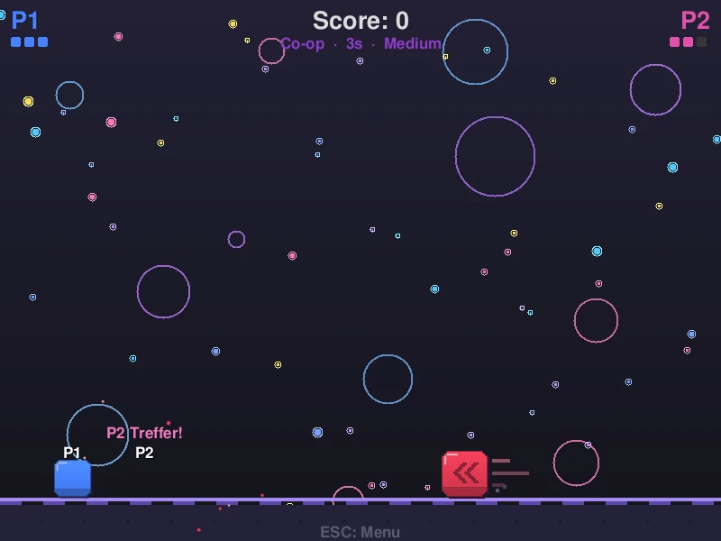
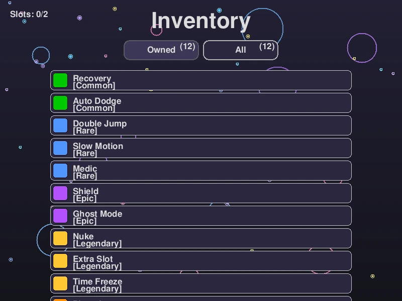
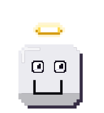
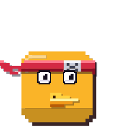
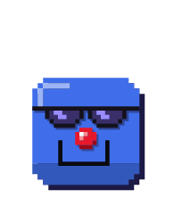
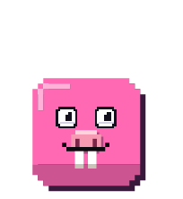
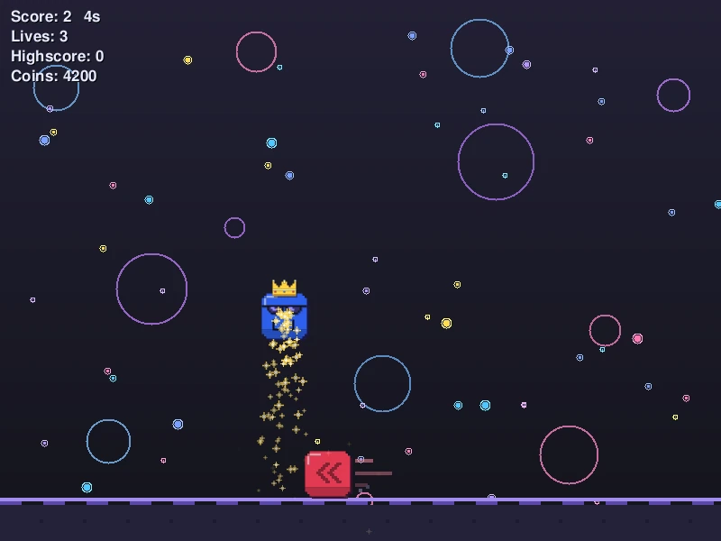

JumpNDodge Wiki
JumpNDodge WikiJumpNDodge Wiki · Hauptseite
JumpNDodge
JumpNDodge ist ein schnelles Arcade-Spiel: Blöcke rasen über den Boden auf dich zu, auf hohen Stufen fallen zusätzlich Kristalle von oben. Du springst, weichst aus und überlebst so lange wie möglich.
Jedes Hindernis, das an dir vorbeizieht, gibt einen Punkt. Auf den höheren Schwierigkeiten werden Punkte zu Coins, mit denen du Powers und Kosmetik freischaltest. Dazu kommen ein lokaler 2-Spieler-Modus, Online-Multiplayer, Replays, eigene Lua-Mods und eine Online-Rangliste.
Dieses Wiki beschreibt jede Funktion mit den genauen Werten aus dem Spiel. Alle Zahlen gelten für die aktuelle Rust Edition (ab Version 5).
Steuerung
Alle Tasten lassen sich unter Einstellungen → Steuerung ändern. Jede Aktion kann mehrere Tasten haben.
Tastatur
| Aktion | Standard | Hinweis |
|---|---|---|
| Springen | Leertaste, W, ↑ | Gedrückt halten springt nicht erneut – jeder Sprung braucht einen neuen Tastendruck. |
| Links / Rechts | A/←, D/→ | 8 Pixel pro Logikschritt. |
| Power 1 / Power 2 | Q / E | Löst die aktiven Powers aus (Slow Motion, Time Freeze, Ghost Mode, Nuke). |
| Pause | Esc | Beim Fortsetzen läuft ein kurzer Countdown (1 s). |
| Vollbild | F11 | Überall im Spiel. |
| 2 Spieler: Spieler 1 | Leertaste/W, A, D | Nur im lokalen 2-Spieler-Modus. |
| 2 Spieler: Spieler 2 | ↑, ←, → | |
| Menüs | Pfeiltasten, Enter, Esc | Alle Menüs lassen sich auch ohne Maus bedienen. |
Controller
Xbox-, PlayStation- und andere Gamepads werden erkannt. Controller 1 steuert Menüs und Spiel, Controller 2 ist Spieler 2 im lokalen 2-Spieler-Modus.
| Taste | Funktion |
|---|---|
| A (Xbox) / ✕ (PlayStation) | Springen, Bestätigen |
| B / ○, Start | Zurück, Pause |
| X / □, LB | Power 1 |
| Y / △, RB | Power 2 |
| Steuerkreuz, linker Stick | Laufen, Menüs |
Ablauf einer Runde
- Im Hauptmenü auf Start, dann Modus und Schwierigkeit wählen.
- Du startest mit 3 Leben links am Boden. Von rechts kommen Bodenblöcke, ab Hardcore fallen zusätzlich Kristalle.
- Jeder Bodenblock, der links aus dem Bild fährt, gibt +1 Punkt. Kristalle geben keine Punkte.
- Ein Treffer kostet ein Leben, entfernt das Hindernis und macht dich für 0,75 s unverwundbar (die Figur blinkt). Bei 1 Leben pulsiert der Bildschirmrand rot und ein Herzschlag ist zu hören.
- Bei 0 Leben ist die Runde vorbei. Der Game-Over-Bildschirm zeigt Punkte, Zeit, Rekord und verdiente Coins und bietet Neustart, Replay (V) und Menü.
Nach der Runde werden Highscore, Bestzeit und Statistik gespeichert. Außer im Klassik-Modus und mit aktiven Mods geht dein Ergebnis auch an die Online-Rangliste.
Spielfigur
Die Spielfigur ist ein Block in deiner Profilfarbe. Ein Sprung dauert vom Absprung bis zur Landung etwa 40 Logikschritte (rund 0,67 s) und erreicht 200 px Höhe. Mit Double Jump kannst du einmal in der Luft nachspringen.
Die Figur bleibt immer im Bild: Am linken und rechten Rand geht es nicht weiter, nach oben stößt sie an die Decke.
Bewegung (nur Optik)
- Squash & Stretch: Beim Absprung streckt sich die Figur (je schneller sie steigt, desto mehr), am höchsten Punkt wird sie rund, im Fallen streckt sie sich leicht.
- Landung: Die Figur quetscht sich je nach Aufprall-Tempo flach und wippt danach gedämpft nach.
- Staubwölkchen beim Absprung und Landen.
Das alles ändert nur das Aussehen – die Trefferfläche bleibt immer genau 50 × 50 px. Abschaltbar über Effekte. Mit Legacy-Grafik sieht die Figur aus wie in der ursprünglichen Python-Version (ohne Squash).
Aussehen ändern: Profilfarbe und Kosmetik (Kopfbedeckung, Augen, Nase, Mund, Spur).
Hindernisse
Bodenblock
Rote Blöcke mit Pfeilen, die über den Boden auf dich zufahren. Der Abstand zwischen zwei Blöcken ist zufällig innerhalb der Hindernis-Pause der Schwierigkeit. Hinter jedem Block ziehen kurze Fahrtstreifen her, beim Fahren wippt und neigt er sich leicht (nur Optik).
Die Pause zählt nur, solange die Zeit nicht von Time Freeze angehalten ist. Slow Motion und ähnliche Powers halbieren das Tempo, nicht die Pause.
Kristall (fallendes Hindernis)
Lila Kristallblöcke, die von oben herunterfallen. Ein Warnpfeil zeigt, wo einer kommt. Sie erscheinen auf Hardcore, Unmöglich, Albtraum und Hölle, im Modus Dynamisch ab Tempo 14 und im benutzerdefinierten Modus, wenn „Vert. Hindernisse“ an ist. Im Klassik-Modus gibt es keine Kristalle.
Auf breiteren Fenstern kommen Kristalle häufiger (der Takt wird mit 800 ÷ Fensterbreite verrechnet), damit die Dichte gleich bleibt. Im Fall strecken sie sich leicht, beim Aufprall auf den Boden werden sie flachgedrückt und verschwinden (nur Optik).
Eigene Hindernisse
Mit Lua-Mods lassen sich eigene Hindernisse mit Größe, Farbe, Tempo und Häufigkeit anlegen – am Boden oder von oben.
1-UP
Das türkise Herz gibt ein zusätzliches Leben. Jedes Mal, wenn ein neues Bodenhindernis fällig ist, wird mit 1,5 % Chance stattdessen ein 1-UP erzeugt. Es fährt wie ein Hindernis über den Boden und muss berührt werden.
- Medic erhöht die Chance um 15 % (auf 1,725 %).
- Magnet zieht 1-UPs im Umkreis von 200 px an.
- Im benutzerdefinierten Modus lassen sich 1-UPs abschalten.
- Im 2-Spieler-Koop belebt ein 1-UP den ausgeschiedenen Partner wieder, statt ein Leben zu geben.
Schwierigkeiten
Die Schwierigkeit legt das Tempo der Hindernisse, die Pause zwischen ihnen, fallende Kristalle und die Coin-Regel fest. Jede Schwierigkeit hat einen eigenen Highscore, eine eigene Bestzeit, eigene Online-Rangliste und einen eigenen Rekord-Geist.
| Stufe | Tempo | Hindernis-Pause | Kristalle | Coins |
|---|---|---|---|---|
| Leicht | 6 | 1,4 – 2,2 s | – | keine |
| Mittel | 8 | 1,0 – 1,8 s | – | keine |
| Schwer | 11 | 0,6 – 1,3 s | – | 10 Punkte = 1 Coin |
| Hardcore | 15 | 0,4 – 1,0 s | ja | 5 Punkte = 1 Coin |
| Unmöglich | 18 | 0,5 – 1,0 s | ja | 3 Punkte = 1 Coin |
| Albtraum | 24 | 0,26 – 0,5 s | ja | 2 Punkte = 1 Coin |
| Hölle | 32 | 0,12 – 0,3 s | ja | 1,5 Punkte = 1 Coin (aufgerundet) |
| Dynamisch | 7 → ∞ | 1,4 – 2,4 s → kürzer | ab Tempo 14 | keine |
Tempo = Pixel pro Logikschritt (60 pro Sekunde). Tempo 8 heißt also 480 Pixel pro Sekunde.
Coins gibt es nur, wenn du mindestens 15 Sekunden überlebst. Die Werte stehen auch im Spiel, wenn du mit der Maus über eine Schwierigkeit fährst.
Dynamisch
Startet langsam und wird nie fertig: Alle 5 Sekunden steigt das Tempo um 0,5, die kürzeste Pause sinkt um 50 ms (bis 20 ms) und die längste um 100 ms (mindestens 20 ms über der kürzesten). Ab Tempo 14 fallen zusätzlich Kristalle. Dynamisch gibt keine Coins – es geht nur um den Rekord.
Combo & „Knapp!“
Jedes Hindernis, das du ohne Treffer hinter dir lässt, erhöht deine Combo. Ab 3 steht sie unter der Anzeige oben links und färbt sich mit wachsender Combo. Ein Treffer setzt sie auf 0 zurück („Combo weg ×N“ ab 5).
- Meilensteine: bei 10, 25, 50, 75, 100 … erscheint „Combo ×N!“ mit Funken und Ton.
- „Knapp!“: Springst du so knapp über einen Block, dass deine Unterkante höchstens 14 px über ihm ist, zählt er doppelt für die Combo. Dazu gibt es eine sehr kurze Zeitlupe (0,17 s), Funken und einen eigenen Ton.
Combo und „Knapp!“ sind reine Anzeige: Sie ändern weder Punkte noch Coins. Ohne Effekte werden sie nicht angezeigt.
Spielmodi
Im Startmenü wählst du oben den Modus: Benutzerdefiniert, Standard, Klassik oder 2 Spieler. Online-Multiplayer und JumpNDodge Classic findest du an anderer Stelle.
Standard
Der normale Modus mit allen Regeln dieses Wikis: alle Schwierigkeiten, Powers, Coins, Rangliste, Replays und Rekord-Geist.
Benutzerdefiniert (Custom)
Hier stellst du die Runde selbst zusammen. Ergebnisse haben einen eigenen Highscore unter „Custom“, einen Rekord-Geist gibt es hier nicht.
| Einstellung | Bereich | Wirkung |
|---|---|---|
| Tempo | 4 – 35 | Lauf-Tempo der Hindernisse (Standard 10). |
| Min. Pause | 100 – 2000 ms | Immer mindestens 100 ms unter der max. Pause. |
| Max. Pause | 200 – 2500 ms | Immer mindestens 100 ms über der min. Pause. |
| 1-Ups | an/aus | Aus = es erscheinen keine 1-UPs. |
| Vert. Hindernisse | an/aus | Zusätzlich fallende Kristalle. |
| Wind (Seiten) | an/aus | Seitenwind schiebt dich und die Hindernisse nach links oder rechts. Stärke und Richtung wechseln immer wieder; Anzeige „Wind: N %“ mit Pfeil. |
| Wind (alle Richtungen) | an/aus | Wie oben, zusätzlich nach oben/unten – beeinflusst auch Sprünge und fallende Kristalle. |
| Free Roam | an/aus | Kein Springen: Du fliegst frei mit W A S D (10 px pro Schritt), Hindernisse kommen schräg von allen vier Seiten. |
Coins gibt es im Custom-Modus nicht.
Klassik
Die Runde wie in den frühen Versionen: nur einfache Bodenblöcke, keine Kristalle, keine Coins, keine Online-Rangliste und kein Rekord-Geist. Gut zum Üben ohne Ablenkung.
2 Spieler (lokal)
Zwei Spieler an einer Tastatur oder mit zwei Controllern. Beide Figuren sind 40 × 40 px groß, Spieler 1 startet links, Spieler 2 etwas weiter rechts.
| Variante | Regeln |
|---|---|
| Koop | Ihr spielt zusammen. Wer 0 Leben hat, scheidet aus – sammelt der andere ein 1-UP ein, kommt der Partner zurück (kurz unverwundbar). Die Runde endet, wenn beide ausgeschieden sind. |
| VS | Gegeneinander auf derselben Strecke. Wer zuerst alle Leben verliert, verliert. Scheiden beide im selben Moment aus, ist es unentschieden. |
Jeder hat 3 Leben, nach einem Treffer 1,5 s Schutz. Powers gibt es im 2-Spieler-Modus nicht. Die Regeln sind dieselben wie im Online-Multiplayer.

Online-Multiplayer
Unter Online → Multiplayer spielst du VS oder Koop mit einem Freund über das Internet. Die Regeln entsprechen dem lokalen 2-Spieler-Modus; der Server berechnet die Runde, damit beide dasselbe sehen.
- Server wählen: der offizielle Server (
play.mert.win) oder ein eigener per Adresse/Hostname. Die Liste zeigt, ob ein Server online ist, wie viele Spieler da sind, den Ping und ob er ein Passwort hat. - Raum erstellen (VS oder Koop, Schwierigkeit wählen) oder einem Raum aus der Liste beitreten. Jeder Raum hat einen 4-stelligen Code, den du deinem Freund schicken kannst. Pro Raum spielen 2 Spieler.
- Beide drücken Bereit, nach einem Countdown startet die Runde.
- Danach gibt es das Ergebnis und Rematch.
- Server-Chat: Nachrichten gehen live an alle, die gerade auf dem Server sind. Es gibt keinen Verlauf, nichts wird gespeichert, und es gibt eine Bremse gegen Spam.
- Versionen: Spiel und Server müssen dasselbe Netzwerk-Protokoll haben. Ältere und neuere Spielversionen können zusammen spielen, solange das Protokoll gleich ist. Sonst sagt das Spiel, wer aktualisieren muss.
- Verbindung: Normalerweise über UDP. Antwortet ein Hostname nicht per UDP (z. B. hinter einem Cloudflare Tunnel), verbindet sich das Spiel automatisch über eine sichere WebSocket-Verbindung (
wss://).
Einen eigenen Server kann jeder betreiben.
JumpNDodge Classic
Unter Mehr → JumpNDodge Classic steckt das allererste JumpNDodge als kleines Extra: Gegner kommen von links und rechts, du springst ihnen auf den Kopf, um sie zu besiegen (+1 Punkt). Berührst du sie von der Seite, verlierst du eines von 3 Leben. Steuerung: A/D und Leertaste, Esc beendet.
Coins
Coins sind die Währung des Spiels. Du siehst sie oben in den Menüs.
Coins verdienen
| Quelle | Menge |
|---|---|
| Runde auf Schwer bis Hölle | Punkte ÷ Teiler der Schwierigkeit, nur ab 15 s Überleben |
| Tägliche Belohnung | 50–100 + Bonus |
| Doppelte Power aus dem Power-Shop | +10 zurück |
| Power Recovery | +3 am Rundenende |
| Codes | je nach Code |
Beispiel: 120 Punkte auf Hardcore nach 40 s = 120 ÷ 5 = 24 Coins. Auf Hölle wird aufgerundet: 25 Punkte = 25 ÷ 1,5 = 16,7 → 17 Coins.
Keine Coins gibt es auf Leicht, Mittel und Dynamisch, im Klassik- und Custom-Modus, im 2-Spieler-Modus und online. Runden mit aktiven Mods zählen Coins nur in einer eigenen Mod-Statistik.
Coins ausgeben
- Power-Shop: 50 pro Zug, 500 für 10 Züge.
- Kosmetik-Shop: 100 bis 2500 je Teil.
Tägliche Belohnung
Einmal pro Tag gibt es unter Tägliche Belohnungen (Hauptmenü, oben rechts) kostenlose Coins. Das Datum kommt aus dem Internet – ohne Verbindung lässt sich die Belohnung nicht abholen, und das Umstellen der Uhr hilft nicht.
- Grundbetrag: zufällig 50–100 Coins.
- Bonus: Danach kommt mit 90 % Chance +1 Coin dazu, dann wieder mit 90 % +1 und so weiter, höchstens +150. Im Schnitt sind das etwa +9.
- Seltenheit der Belohnung: ohne Bonus „Normal“, mit Bonus „Selten“, ab +20 Bonus „Episch“.
Der Bildschirm zeigt die letzte Belohnung und die Zeit bis zur nächsten.
Powers
Powers sind Fähigkeiten, die du im Power-Shop ziehst und im Inventar ausrüstest. Ohne Extra Slot hast du 1 Platz, mit Extra Slot 2 Plätze. Powers wirken nur im Standard-, Klassik- und Custom-Modus, nicht zu zweit.
- Aktive Powers löst du mit Q (Power 1) und E (Power 2) aus. Danach läuft ein Cooldown, der rechts oben neben dem Namen steht.
- Passive Powers wirken von selbst, solange sie ausgerüstet sind.
| Power | Seltenheit | Art | Wirkung | Dauer / CD |
|---|---|---|---|---|
| Recovery | Common | passiv | +3 Coins am Rundenende. Gilt auf Schwer (ab 15 s Überleben) sowie Hardcore, Unmöglich und Dynamisch (ab 10 s). | – |
| Auto Dodge | Common | passiv | Bei jedem Treffer 5 % Chance, dass er nicht zählt („Auto Dodge!“). | – |
| Double Jump | Rare | passiv | Einmal in der Luft nachspringen (Sprungkraft 18 statt 20). | – |
| Slow Motion | Rare | aktiv | Alle Hindernisse halb so schnell. | 2 s / 40 s |
| Medic | Rare | passiv | 1-UPs erscheinen 15 % häufiger. | – |
| Magnet | Rare | passiv | Zieht 1-UPs im Umkreis von 200 px zu dir – je näher, desto stärker. | – |
| Shield | Epic | passiv | Blockt einen Treffer („Geschützt“). Danach lädt der Schild 40 s nach. | – / 40 s |
| Ghost Mode | Epic | aktiv | Unverwundbar gegen alle Hindernisse. | 2 s / 40 s |
| Nuke | Legendary | aktiv | Vernichtet 4 s lang laufend alle Hindernisse im Umkreis von 200 px um dich. | 4 s / 20 s |
| Extra Slot | Legendary | dauerhaft | Ein zweiter Power-Platz. Wirkt schon, wenn du ihn besitzt – er muss nicht ausgerüstet werden. | – |
| Time Freeze | Legendary | aktiv | Hält alle Hindernisse und den Wind 2 s komplett an (in dieser Zeit treffen sie dich nicht), danach 5 s halbes Tempo. | 2 s + 5 s / 30 s |
| Phoenix | Mythic | passiv | Statt Game Over: Wiederbelebung mit 2 Leben, 2 s unverwundbar, 6 s halbes Tempo („Phoenix Revival!“). | – / 120 s |
Gut zu wissen
- Slow Motion, das Nachlaufen von Time Freeze und Phoenix verlangsamen nicht gestapelt: Das Tempo ist höchstens halbiert.
- Reihenfolge bei einem Treffer: Ghost Mode / Phoenix-Schutz → Shield → Auto Dodge → Leben weg.
- Alle Cooldowns laufen nur während der Runde und starten jede Runde neu.

Power-Shop
Im Shop → Powers ziehst du Powers wie aus einer Kiste: Ein Band mit Feldern läuft durch (2,2 s) und bleibt auf deinem Gewinn stehen.
| Zug | Preis |
|---|---|
| 1 Power | 50 Coins |
| 10 Powers | 500 Coins |
| Doppelte Power | +10 Coins zurück |
Zuerst wird die Seltenheit gelost, dann eine Power dieser Seltenheit:
| Seltenheit | Chance | Powers |
|---|---|---|
| Common | 79,5 % | Recovery, Auto Dodge |
| Rare | 10 % | Double Jump, Slow Motion, Medic, Magnet |
| Epic | 8 % | Shield, Ghost Mode |
| Legendary | 2 % | Nuke, Extra Slot, Time Freeze |
| Mythic | 0,5 % | Phoenix |
Beispiel: Phoenix hat eine Chance von 0,5 % pro Zug – im Schnitt also einmal in 200 Zügen (10 000 Coins).
Kosmetik
Kosmetik ändert nur das Aussehen deiner Figur. Du kaufst sie im Kosmetik-Shop und legst sie im Inventar an. Pro Platz trägst du ein Teil: Kopf, Augen, Nase, Mund und Spur.
Preise und Sale
- Jedes Teil hat eine Preisspanne. Der genaue Preis wird beim ersten Start einmal pro Spielstand ausgelost und bleibt danach gleich.
- Täglicher Sale: Jeden Tag sind 4 Teile reduziert, um 20, 25, 30, 40 oder 50 %. Häufige Teile kommen öfter in den Sale als seltene.
- Ein Teil kann nur einmal gekauft werden.
Spuren
Spuren sind Partikel, die hinter der Figur herausziehen, solange du läufst oder steigst. Sie werden hinter der Figur gezeichnet und wandern mit der Welt nach hinten.
| Spur | Seltenheit | Preis |
|---|---|---|
| Rauchspur | Common | 100–180 |
| Feuerspur | Common | 150–250 |
| Eisspur | Rare | 200–300 |
| Herzspur | Rare | 200–300 |
| Sternenspur | Rare | 220–320 |
| Schattenspur | Epic | 250–400 |
| Funkelspur | Epic | 350–500 |
| Blutspur | Epic | 350–500 |
| Giftspur | Epic | 400–600 |
| Blitzspur | Epic | 450–650 |
| Regenbogenspur | Legendary | 800–1200 |
Figur-Teile







| Teil | Platz | Seltenheit | Preis |
|---|---|---|---|
| Ninja-Stirnband | Kopf | Common | 120–200 |
| Propellermütze | Kopf | Rare | 250–350 |
| Zylinder | Kopf | Rare | 280–380 |
| Teufelshörner | Kopf | Epic | 420–580 |
| Heiligenschein | Kopf | Legendary | 2000–2500 |
| Gelbe Krone | Kopf | Legendary | 2500 |
| Pixel-Augen | Augen | Common | 120–200 |
| Sonnenbrille | Augen | Common | 130–200 |
| 3D-Brille | Augen | Rare | 200–300 |
| Roboter-Visier | Augen | Epic | 420–580 |
| Clown-Nase | Nase | Common | 100–150 |
| Schweinenase | Nase | Rare | 180–260 |
| Nerd-Hasenzähne | Mund | Common | 110–170 |
| Vogelschnabel | Mund | Rare | 190–270 |
| Breites Grinsen | Mund | Rare | 220–320 |
| Vampirzähne | Mund | Epic | 380–520 |
Kopf und Gesicht werden in einer festen Reihenfolge gezeichnet: Die Brille liegt zum Beispiel über einem Stirnband. Mit Legacy-Grafik erscheinen die Teile im Stil der Python-Version.
Seltenheiten
Powers und Kosmetik haben fünf Seltenheiten, jede mit eigener Farbe in Shop und Inventar:
Common Rare Epic Legendary Mythic
Die Chancen im Power-Shop stehen unter Power-Shop. Im Sale werden Teile nach Seltenheit gewichtet: häufig 100, selten 45, episch 20, legendär 8, mythisch 3.
Erfolge
| Erfolg | Bedingung | Coins |
|---|---|---|
| Erste Runde | Spiele deine erste Runde. | 10 |
| 5 / 10 / 20 / 50 / 100 Runden gespielt | Spiele so viele Runden insgesamt. | 25 / 50 / 100 / 200 / 400 |
| Aufgewärmt · Auf dem Weg · Zenturio | 10 / 50 / 100 Punkte in einer Runde. | 15 / 30 / 60 |
| Meisterhaft · Unaufhaltbar · Legende · Göttergleich | 200 / 300 / 500 / 1000 Punkte in einer Runde. | 100 / 150 / 200 / 500 |
| Hardcore · Unmöglich · Albtraum · Hölle · Dynamisch gestartet | Eine Runde auf dieser Schwierigkeit starten. | 20 / 35 / 50 / 75 / 25 |
| Unmöglich-Überlebender | 20 Sekunden auf Unmöglich überleben. | 125 |
| Albtraum- / Hölle-Überlebender | Auf dieser Schwierigkeit überleben. | 200 / 350 |
| 1-UP eingesammelt | Ein 1-UP einsammeln. | 15 |
| 3× / 10× 1-UP gesamt | So viele 1-UPs insgesamt. | 35 / 80 |
| 5× 1-UP in einer Runde | 5 1-UPs in einer einzigen Runde. | 60 |
| 100 / 500 / 1000 / 2500 Coins gesammelt | So viele Coins insgesamt verdienen. | 20 / 50 / 100 / 200 |
| Unberührt | Eine Runde mit mindestens 20 Punkten ohne Schaden beenden. | 150 |
| Speed Demon | Im Dynamisch-Modus den Tempo-Schub erreichen. | 75 |
| 60 Sekunden überlebt | 60 Sekunden in einer Runde überleben. | 100 |
| Phönix-Wiederbelebung | Vom Phoenix wiederbelebt werden. | 80 |
Statistik
Unter Profil → Statistik siehst du in Reitern: Highscores und Bestzeiten je Schwierigkeit, Erfolge, Gesamt (Spielzeit, Runden, Tode, Sprünge, eingesammelte 1-UPs, verdiente Coins, Punkte und Runden je Schwierigkeit) und – wenn du Mods nutzt – die getrennte Mod-Statistik.
„Sitzung“ heißt: seit dem Start des Spiels. Alles andere ist dauerhaft im Spielstand.
Profil & Name
Beim ersten Start wählst du die Sprache und legst ein Profil an. Mehrere Profile auf einem Rechner sind möglich – jedes hat eigene Coins, Powers, Kosmetik, Highscores und Einstellungen. Unter Profil findest du Statistik, Erfolge, Profilfarbe, Umbenennen und den Profilwechsel.
Für die Online-Funktionen brauchst du einen eindeutigen Benutzernamen. Ist der Server erreichbar und dein Profil hat noch keinen, fragt das Spiel danach, bevor du online gehst.
Rangliste, Freunde, Clans
Im Online-Bereich (Hauptmenü unten rechts):
| Bereich | Was es kann |
|---|---|
| Rangliste | Highscores vergleichen – je Schwierigkeit, weltweit. Runden im Klassik-Modus und mit Mods zählen nicht. |
| Freunde | Spieler suchen, Freundschaftsanfragen senden und annehmen, öffentliche Profile ansehen. |
| Nachrichten | Chats mit Freunden, mit Anzeige ungelesener Nachrichten. |
| Clan | Einen Clan gründen, suchen, beitreten und Beitrittsanfragen verwalten. |
| Multiplayer | VS oder Koop mit einem Freund – siehe Online-Multiplayer. |
Ohne Internet zeigt das Spiel einen Hinweis; alles andere funktioniert weiter offline.
Codes einlösen
Unter Mehr → Code einlösen gibst du Aktionscodes ein, die es z. B. zu Updates oder Events gibt. Codes werden beim Server geprüft, geben Coins und gelten einmal pro Profil. Aktuelle Codes werden über die offiziellen Kanäle verteilt – nicht in diesem Wiki.
Eigener Server
Der JumpNDodge-Server ist ein kleines Programm ohne Fenster für Windows, Linux, macOS und Docker (amd64, arm64). Er braucht kaum Leistung, ein Raspberry Pi oder ein Heimserver reicht.
- Ports: UDP 47800 für das Spiel, TCP 47801 für WebSocket (z. B. hinter einem Cloudflare Tunnel – dann braucht es keine Portweiterleitung).
- Einstellungen in
server.json: Name, Begrüßung, Passwort, max. Räume, Log-Datei, Chat, Auto-Update. - Auto-Update: Der Server lädt neue Versionen selbst, prüft sie und startet neu, sobald niemand verbunden ist.
Schritt-für-Schritt-Anleitung: Server hosten.
Replays & Rekord-Geist
Jede Runde wird Schritt für Schritt aufgezeichnet (Spieler, Hindernisse, 1-UPs, Punkte, Leben). Ein Replay sieht deshalb immer genau so aus wie die Runde – unabhängig von Fenstergröße und Bildrate.
- Replay ansehen: nach der Runde im Game Over Replay (V), oder unter Mehr → Replays die letzte Runde und deine Rekordläufe je Schwierigkeit.
- Steuerung im Replay: Pause, 5 Sekunden vor/zurück, Tempo 1× / 2× / 4×.
- Rekord-Geist: Dein bester Lauf der gewählten Schwierigkeit läuft halbtransparent mit der Beschriftung „Rekord“ mit. Abschaltbar unter Einstellungen. Kein Geist im Custom- und Klassik-Modus.
Lua-Mods
Mit Mods veränderst du das Spiel selbst: eigene Hindernisse, andere Spielwerte, eigene Modi und Reaktionen auf Ereignisse. Mods sind Textdateien mit der Endung .lua im Ordner mods.
Am schnellsten: Hauptmenü → Mods → Beispiel-Mod anlegen, dann Ordner öffnen, beispiel.lua bearbeiten und Neu laden drücken.
Sicherheit
- Jede Mod läuft in einer eigenen Sandbox (Lua 5.4) nur mit
table,string,mathundutf8– kein Zugriff auf Dateien, Netzwerk, Programme oder den Spielstand. - 16 MB Speicher, Zeitlimit pro Aufruf. Fehler schalten nur die betroffene Mod ab, das Mods-Menü zeigt die Meldung.
- Runden mit aktiven Mods zählen getrennt (eigene Highscores und Mod-Statistik, keine echten Coins, nicht in der Online-Rangliste).
Was eine Mod kann
| Funktion | Wofür | Werte |
|---|---|---|
mod = { … } | Name, Autor, Version, Beschreibung fürs Mods-Menü | |
jnd.obstacle{ … } | Eigenes Hindernis | Größe 10–200, Farbe, Häufigkeit (normal = 100, 0 = nur per Ereignis), Tempo-Faktor 0,2–4, am Boden oder von oben |
jnd.modifier{ … } | Spielwerte ändern | Faktoren für Schwerkraft, Sprung, Tempo; zusätzliche Leben |
jnd.mode{ … } | Eigener Modus („Spielen: Name“) | Tempo, Pausen, Leben, Hindernisse von oben |
on_round_start(info) | Rundenbeginn | Schwierigkeit, Fenstergröße, Modus |
on_tick(state) | 60× pro Sekunde, kann Hindernisse erzeugen | Schritt, Punkte, Leben, Spielerposition, Fenstergröße |
on_hit(state) | Nach jedem Treffer | Punkte, Leben |
jnd.log(…) | Text im Mods-Log |
mod = { name = "Goldregen", author = "Du", version = "1.0" }
jnd.obstacle{ id = "gold", w = 30, h = 30, color = {240, 200, 60}, weight = 0, speed = 1.3 }
function on_tick(state)
if state.tick % 300 == 0 then return { spawn = "gold" } end -- alle 5 Sekunden
endMods aus der alten Python-Version (.py) laufen in der Rust Edition nicht.
Einstellungen
Das Zahnrad neben dem Profil öffnet die Einstellungen. Dort gibt es die Bereiche Anzeige, Spiel, Steuerung, Sound und Updates.
| Einstellung | Wirkung |
|---|---|
| Farbschema | Dunkel oder Hell. |
| Legacy-Grafik | Alles wie in der ursprünglichen Python-Version, siehe Grafik. |
| GUI-Größe | Skaliert Menüs und Schrift. |
| Animationen | Voll, Reduziert (nur Überblenden) oder Aus – für Menü-Übergänge und das Einblenden von Pop-ups. |
| Vollbild (F11) | Scharf in echter Bildschirmauflösung. |
| Bildrate | Monitor (passend zur Bildwiederholrate), feste FPS oder unbegrenzt. Die Spiellogik bleibt immer bei 60 Schritten pro Sekunde. |
| Effekte | Partikel, Bildschirmwackeln, Treffer-Stopp, Combo-Anzeige, „Knapp!“ und die federnde Bewegung von Figur und Hindernissen. |
| Hintergrund | Sterne, Ringe, Bewegung und einfarbiger Hintergrund einzeln schaltbar. |
| Boden anzeigen | Bodenlinie ein/aus. |
| Sprache | Deutsch, English, Русский, Türkçe, Schwiizerdütsch. |
| Pause bei Fokusverlust | Pausiert die Runde, wenn du in ein anderes Fenster wechselst. |
| Rekord-Geist | Rekordlauf mitlaufen lassen. |
| Steuerung | Alle Tasten neu belegen, auch für 2 Spieler. |
| Sound | Lautstärke für Musik (Menü/Spiel), Klicks, Treffer, Game Over und weitere Effekte; Musikstück im Spiel. |
| Updates | Nach Updates suchen, automatisch beim Start suchen. |
| Sprache exportieren | Texte als Datei speichern, z. B. um eine Übersetzung zu verbessern. |
Grafik & Effekte
Seit Version 5.3 kommen alle Grafiken aus Pixel-Texturen im Stil der Python-Version: flache Flächen, harte Schatten, Treppen-Ecken – gerendert in voller Bildschirmauflösung und deshalb in jeder Größe scharf.
- Legacy-Grafik: zeigt alles exakt wie die ursprüngliche Python-Version – einfarbige Rechtecke, rote Blöcke, grünes 1-UP, zwei Bodenlinien, einfarbiger Hintergrund, kein Squash & Stretch.
- Effekte (abschaltbar): Splitter bei Treffern, kurzer Treffer-Stopp und Bildschirmwackeln, Funkeln beim 1-UP, Staub beim Springen und Landen, Punkte-Hüpfer, Combo, „Knapp!“, federnde Figur, wippende Hindernisse.
- Eigene Texturen: Lege Bilder in den Ordner
texturesneben dem Spiel (z. B.player.pngodercos_<name>.svg) – sie ersetzen die eingebauten.


Dateien & Speicherorte
| System | Spielstand-Ordner |
|---|---|
| Windows (Installer, portabel) | Ordner data neben dem Spiel |
| Linux (Paket) | ~/.local/share/JumpNDodge |
| macOS | ~/Library/Application Support/JumpNDodge |
- Der Spielstand ist verschlüsselt und wird im Hintergrund gespeichert.
replays/:last.jnr(letzte Runde) undbest-<Schwierigkeit>.jnr(Rekordläufe, daraus kommt der Geist).mods/: deine Lua-Mods.textures/: eigene Texturen.sound/: eigene Sounds (haben Vorrang vor den eingebauten).- Bei einem Update bleibt der Ordner
dataerhalten.
Updates & Versionen
Das Spiel sucht beim Start nach neuen Versionen und installiert sie mit einem Klick (abschaltbar). Alternativ hält W Hub JumpNDodge aktuell. Alle Änderungen stehen in den Release-Notizen.
| Version | Wichtigstes |
|---|---|
| 5.4.1 | Updater repariert, Anleitung als Pop-up, einheitliche Menüs, Server über Cloudflare Tunnel und mit Auto-Update, federnde Figur und wippende Hindernisse. |
| 5.4 | Server-Chat, Menüs im Startmenü-Look, Übergänge, Combo, „Knapp!“, schnelleres Zeichnen. |
| 5.3 | Neue Pixel-Grafik, Legacy-Grafik, Light Mode. |
| 5.2 | Eingebaute Sounds, Replays-Menü. |
| 5.1 | Replays, Rekord-Geist, Controller, Lua-Mods. |
| 5.0 | Rust Edition: komplett neu geschrieben, Online-Multiplayer, eingebauter Updater, Bildrate passend zum Monitor. |